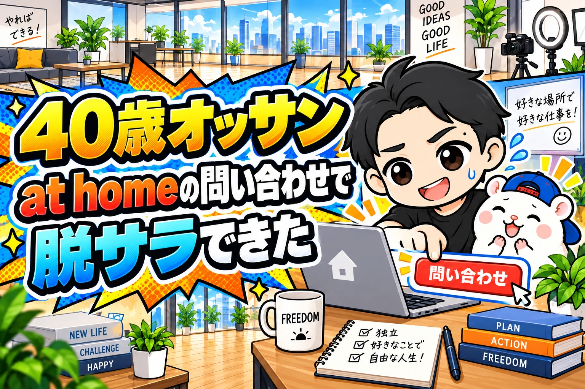
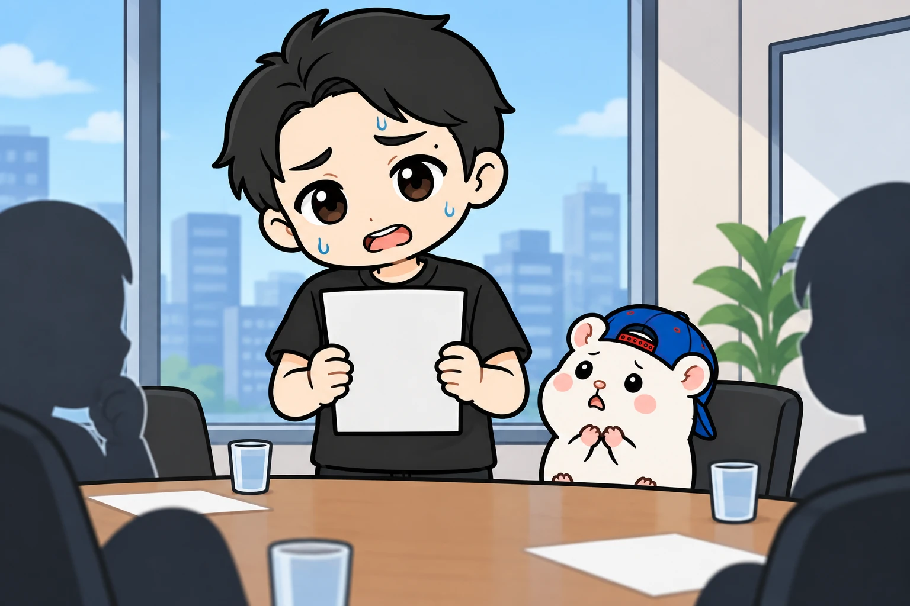
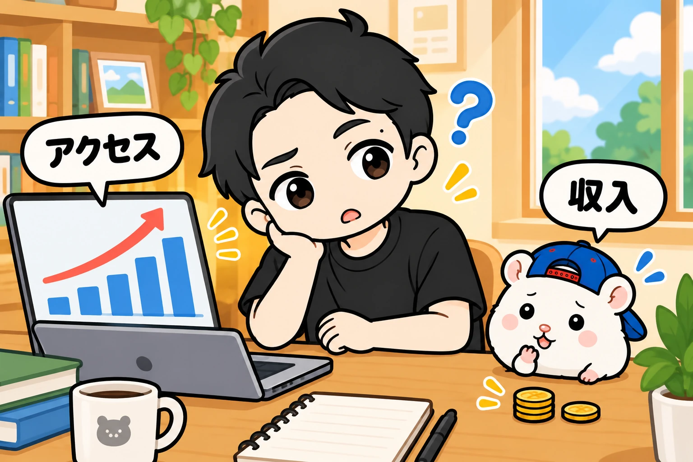
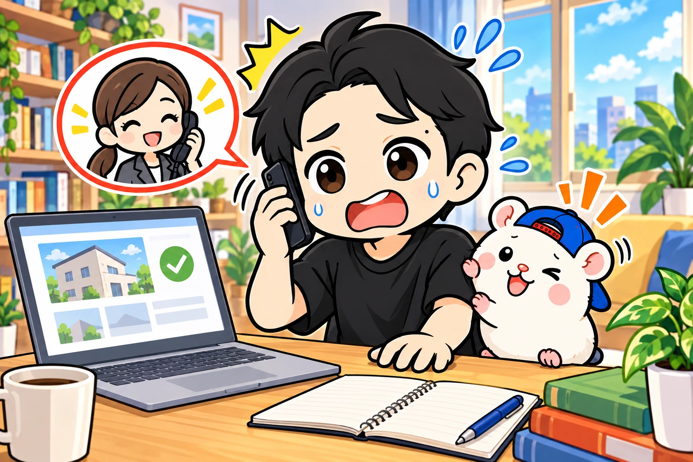
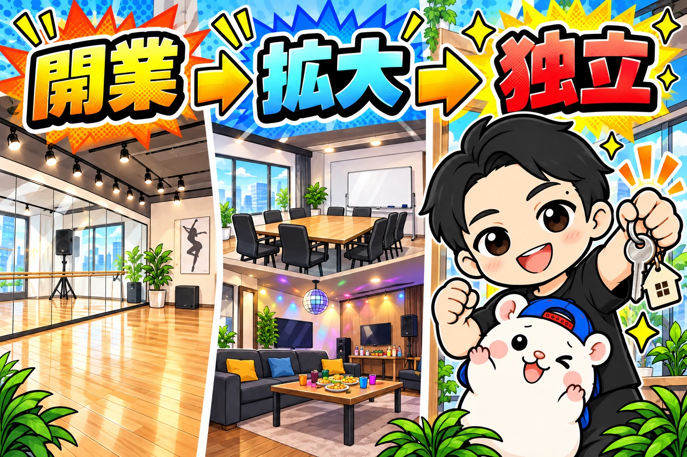
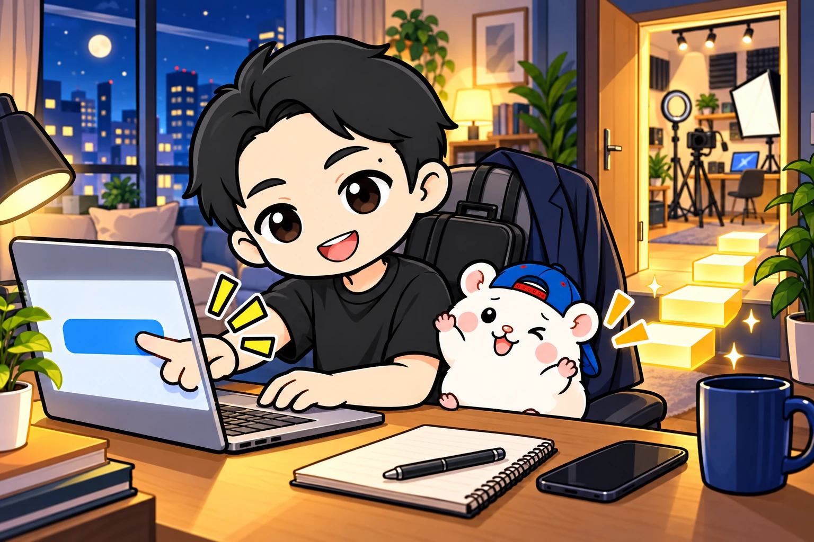

ぼくの人生を変えたのは、アットホームの問い合わせボタンでした。
押した数分後、不動産屋さんから電話がかかってきました。
うまく返答もできず、しどろもどろ。
事業用の物件に問い合わせること自体、初めてだったんです。
その問い合わせした物件が、最初のレンタルスペースになりました。
その後、店を増やして、40歳で会社を辞めました。
今は法人化して、レンタルスペースなど、自分で商売をしています。
最初から独立できる自信があったわけではありません。
むしろ、人前で話すのが苦手で、会社員としてやっていくのがしんどかった。
今日は、そのころから最初の問い合わせまでを書きます。
会社の中で埋もれていくのは嫌だった

大学を卒業してから、ぼくは製薬会社でサラリーマンをしていました。
でも、自分にはあまり協調性がないし、人前で話すのも苦手。
サラリーマンとしての適性はなく、60歳までやるのはイヤだなと思っていました。
父は自営業をしていて、小さいころからその姿を見ていました。
自分もできれば独立して、商売をしたい。
そういう気持ちは、昔からありました。
30代の中盤くらいになると、会社でも出世していく人と、そうでない人が分かれてきます。
ぼくは、なかなかうまくいかないほうでした。
このまま会社の中で埋もれていくのはイヤだな、と。
プライド的にもイヤでした。
きれいな理由ではないかもしれませんが、本当にそう思っていました。
40歳までに、会社を辞めて独立したい。
漠然とですが、区切りのいい年齢を目標にしていました。
会社員としての自分を何とかするより、事業をしている自分になりたかったのです。
ブログは読まれた。でも独立には届かない

35歳くらいから、まずはブログを始めました。
当時はブログがすごく流行っていて、ランニングや仮想通貨のことを書いていました。
ランニングの記事は、結構読まれました。
狙ったキーワードで、検索の上位に入ることも度々ありました。
でも、お金にするのが難しい。
Amazonや楽天のアフィリエイトで、月に数万円くらい。
読んでもらえることと、会社を辞められるくらい稼げることは、別でした。
仮想通貨のほうで、アフィリエイトが稼げた時期もあります。
ただ、それも一過性でした。
独立したいという気持ちがあっても、なかなかそこまで届かない。
一方で、副業をやりながらアンテナを張っていると、いろんな情報が入ってきます。
カラーバス効果というやつです。
その中で、音声配信やYouTubeで紹介されていたのが、レンタルスペースでした。
正直、最初は「怪しいな」と思っていました。
それでも、なぜか、ふとやってみようと思ったんです。
問い合わせた数分後に電話が鳴った

最初の物件への問い合わせは、本当にノリと勢いでした。
アットホームで近所の物件を見つけて、問い合わせる。
それだけのことなのに、ドキドキしていました。
「何を聞かれるんだろう」
事業用の物件なんて、契約したこともありません。
というか、問い合わせることすら初めてです。
何を聞かれるかも分からないまま、ボタンをポチッと押しました。
すると、数分後に不動産屋さんから電話がかかってきました。
うまく返答できなくて、しどろもどろになりながら話しました。
人前で話すのが苦手なぼくが、初めて商売のために物件を借りようとしているわけです。
それでも、運よくスルスルスルっと決まりました。
途中でいろいろトラブルはありましたが、無事にオープンできました。
最初のお店は、ダンススタジオです。
あの問い合わせが、最初の1店舗につながりました。
独立した今から振り返ると、あそこで人生が変わったなと思います。
大きな決断を堂々としたわけでも、電話でうまくしゃべれたわけでもありません。
ドキドキしながら、問い合わせただけでした。
90万円の1号店から会社を辞めるまで

そのダンススタジオには、最初に約90万円かかりました。
オープンして、7ヶ月で元が取れました。
今も毎月、大体15万円くらいの利益を出してくれています。
そこから、貸し会議室を出したり、別のダンススタジオを出したり、パーティースペースを出したり。
少しずつ店舗を増やしていきました。
やがて、会社員の給料を超えるようになりました。
「会社をやめても家族を養える」という状態になって、40歳で脱サラできました。
ぼくが最初に問い合わせボタンを押したときは、不動産屋さんに何を聞かれるのかさえ分かっていませんでした。
それでも、分からなくても始めた先にこういう結果がありました。
会社にいるうちに小さく始める

会社を辞めたい、独立したい。
そう思っているなら、会社員と並行してやってみることが大事だと思います。
ぼくも、副業をしながら店を増やして、やめられる状態になってからやめました。
副業といっても、決まった時間に自分がずっと働かないといけないものだと、本業との両立が難しくなります。
ぼくは、時間の拘束が少ない商売を選びたいです。
今ならAIもあるので、そういうものも活用しながら進められます。
いきなり「独立するぞ」と考えると、大きすぎるかもしれません。
まずは、スーパースモールステップです。
ぼくにとっては、それが「物件の問い合わせ」でした。
ボタンを押して、電話が来て、しどろもどろになりながら返事をする。
そんな始まりから、会社をやめるところまでつながりました。
何を聞かれるか分からなくてドキドキする気持ちは、ぼくもよく分かります。
気になる物件があるなら、まずは1回、問い合わせてみてください。
▼もう1つの副業、AI社員だけのeBay輸出店の実録🐹
https://note.com/cham_ebay
▼ブログ(レンスペ×eBay、全記事まとめ)
https://rental-space.net
レンタルスペースの数字とやり方は、教科書にぜんぶ書いています。
レンタルスペース経営の教科書
https://rental-space.net/kyokasho/
販売価格は3部売れるごとに2,000円ずつ値上がりします（上限あり）。内容・最新価格は販売ページをご確認ください。